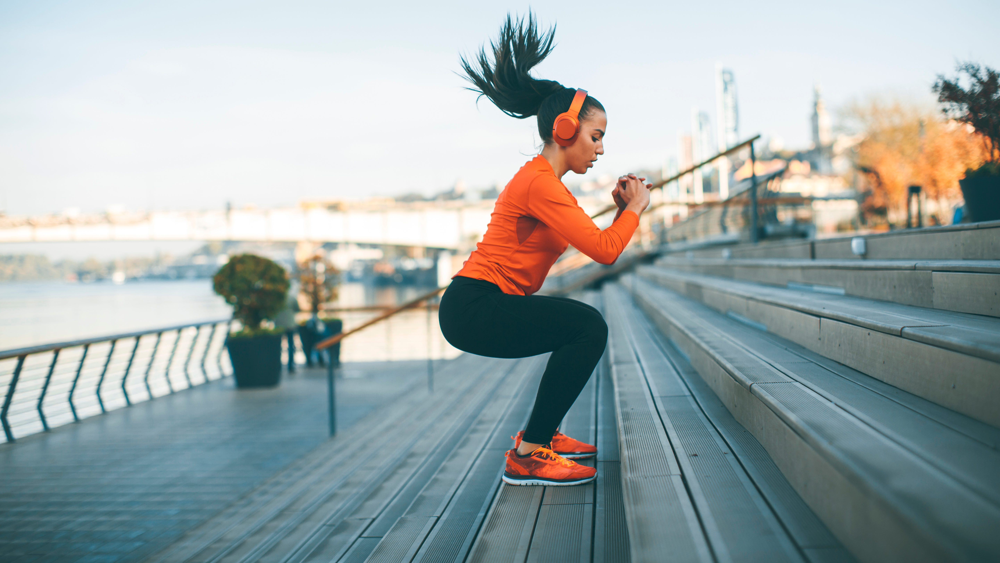

Stress Reducing Exercises

-
Walking - This is perhaps the most simple way to calm yourself down. In fact, studies show that a simple ten minute walk can be just as effective at reducing stress as a walk that is twice or three times as long.
-
Jogging or Running - Assuming your body is able to handle it, running can reduce stress at an even faster rate because of the increased amount of oxygen intake during the running period. Just make sure you have an open and safe space to run.
-
Swimming - There are many aspects of swimming that can optimize the stress reducing process. For example, swimming is an all-body activity, meaning it requires the work of all parts of the body, which makes it great for the cardiovascular system. Additionally, the element of water can add another soothing effect that reduces stress.
-
Cycling - This is an easy workout that can reduce stress because of soothing feelings that it can produce like the feeling of wind blowing against you or going down a hill. Just be sure to follow all the safety precautions necessary.
-
Dancing - This activity can reduce stress in ways other physical activity can’t. Since dancing is an extremely rhythmic activity, it can be satisfactory. Additionally, it can be a very social activity, which as stressed in our environment page, can be key to relieving stress.
-
Boxing - This activity can be a way to relieve stress that can come from anger or frustration. It is a great way to let out emotions of anger and clear your mind to continue a difficult task.